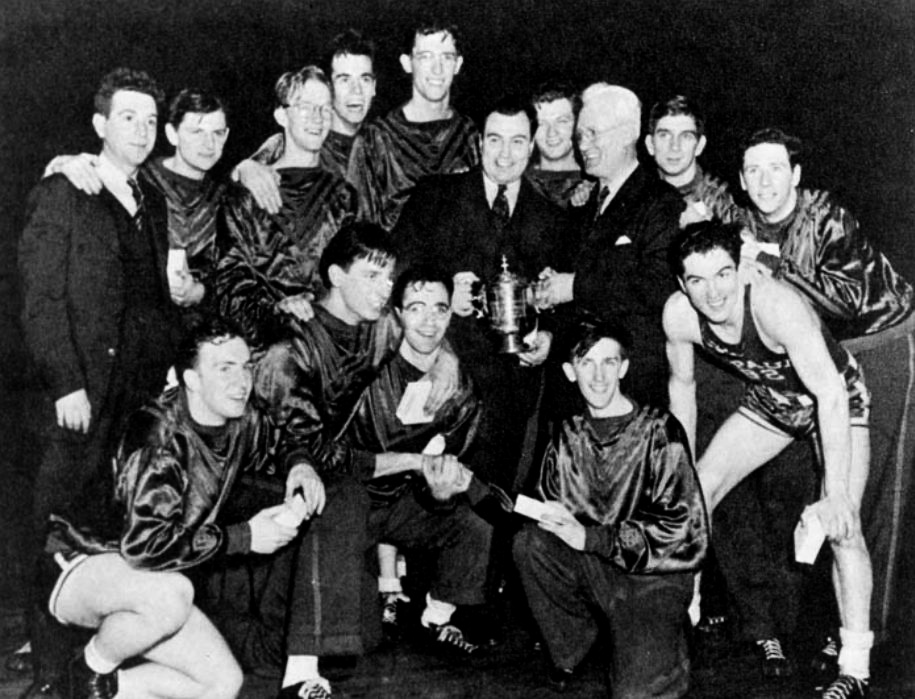
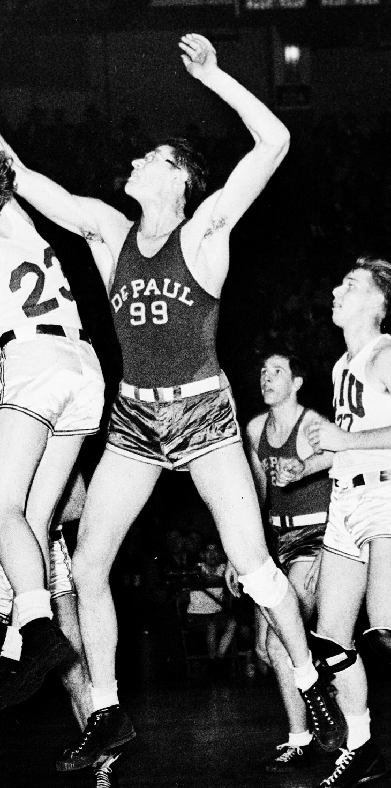
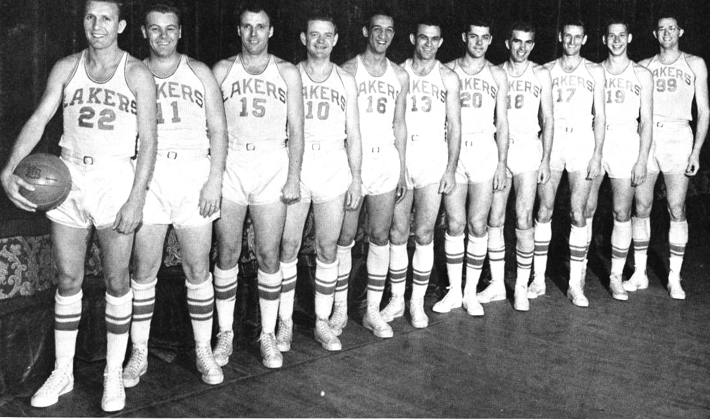

1 m 2 m +2 m
SILUETA, REGLA Y COMBA · RECREACIÓN

DEPAUL · CAMPEONES DEL NIT, 1945
LLEGA EN 1942 DEPAUL · CHICAGO
Foto: DePaul 1945, autor desconocido · CC0, vía Wikimedia Commons
ENTRENADOR · DEPAUL RAY MEYER
PASOS DE BAILE · RECREACIÓN
Foto: DePaul University · dominio público, vía Wikimedia Commons
I
D
DÍA
1
ARO Y TABLERO · RECREACIÓN

MADISON SQUARE GARDEN · 1944
DEPAUL · #99 GEORGE MIKAN
Foto: New York World-Telegram and the Sun · dominio público, vía Wikimedia Commons

MINNEAPOLIS · 1950
NUEVE TEMPORADAS · RECREACIÓN
Foto: Minneapolis Lakers, 1950 · dominio público, vía Wikimedia Commons
Fotos: New York World-Telegram & Sun, DePaul University y Minneapolis Lakers 1950 (dominio público); DePaul 1945 (CC0), vía Wikimedia Commons.